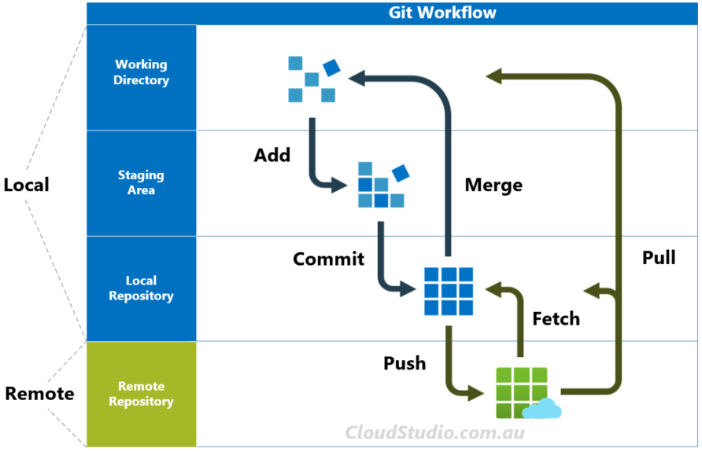

# - Terminal
brew install gitGit introduction
Caution
Web page construction in progress…
First: some useful terminal commands
-
[shift+Q]–> to exit from git dialogue -
highlight + [cmd + D]–> to seleect all subsequent instances -
highlight + [alt + drag]–> to edit at begin of each lines -
highlight + [cmd + shift + L]–> to edit at the end of each lines -
highlight + [ctr + shift + W]–> wrapping text with start and end tag
Git installation
2 recommmended options for Mac:
-
Installer websites
- Install Git from here: http://git-scm.com/downloads
- GitHub home for the macOS installer is here: https://github.com/timcharper/git_osx_installer
You should check out Homebrew, “the missing package manager for OS X”. Among many other things, it can install Git for you. Once you have Homebrew installed, do this in the shell:
Check version
# - Terminal
which git
git --versionGit configuration
Setting up your Git configs
— In terminal
# - Terminal
git config --global user.name "Jane Doe"
git config --global user.email "jane@example.com"
git config --global --list— In R
The usethis package offers an alternative approach. You can set your Git user name and email from within R:
Managing/Verifying git credential stored
Where do I see it on Github?
? fa(name = "github")–> settings –> Developer settings –> Personal Access Tokens
WARNING:
credentials::git_credential_ask("https://github.com")actually exposes the PAT password
# - IN R
credentials::credential_helper_get()
# [1] "osxkeychain"
# to see all of them
credentials::git_credential_ask("https://github.com")
# $protocol
# [1] "https"
# $host
# [1] "github.com"
# $username
# [1] "PersonalAccessToken"
# $password
# [1] "ghp_...52eR" !!!!!!!!!!!!!!!!!!!!!!!!!!!!!!
# attr(,"class")
# [1] "git_credential"
# --- other useful things to check
#usethis::gh_token_help()
usethis::git_sitrep()
gh::gh_whoami()
# {
# "name": "Luisa Mimmi",
# "login": "Lulliter",
# "html_url": "https://github.com/Lulliter",
# "scopes": "gist, repo, user, workflow",
# "token": "ghp_...52eR"
# } What are SSH keys?
Secure Shell Protocol (SSH) is a cryptographic network protocol that allows a single computer to connect with a server over the internet securely. SSH is best used for accessing remote servers.
Create an SSH
You only have to do it once. GitHub’s documentation around how to do this is great. Check out articles on generating a new SSH key and adding a new SSH key to your GitHub account to learn how to do this.
Check which ssh I already have
I have a github SSH
SSH is more secure protocol and requires a SSH key. The supported SSH public keys for GitHub Enterprise Server are ‘id_rsa.pub’, ‘id_ecdsa.pub’, ‘id_ed25519.pub’. You can check your SSH keys as follows:
# - Terminal
ls -al ~/.ssh# - IN R
# ------ where to see my SSH
library(credentials)
# Found git version 2.41.0
# Supported HTTPS credential helpers: cache, store
# Found OpenSSH_9.0p1, LibreSSL 3.3.6
# Default SSH key: /Users/luisamimmi/.ssh/id_ed25519 #(location of my SSH key)
# ------ KEY
# credentials::ssh_key_info()Git commands
See Figure 1
-
git status= View the state of working directory and staging area -
git add= Stage changes for next commit -
git commit= Commit the staged snapshot to the local repository
-
git push= Upload local repository content to a remote repository- 4 TEAM: it makes your local changes publicly available in a remote repository.
- 4 TEAM: it makes your local changes publicly available in a remote repository.
-
git clone= Copies an entire remote repository down to your local machine, setting up a cloned version and checks out the default branch (generally master)- this action is done only once.
-
git fetch= Download content from remote repository, but doesn’t force the merge- 4 TEAM: if a developer has pushed changes to a remote branch, those changes will be pulled down to your repository whenever fetch is performed.
- Note: fetch won’t automatically merge any changes, only update references!
- 4 TEAM: if a developer has pushed changes to a remote branch, those changes will be pulled down to your repository whenever fetch is performed.
-
git merge= Join two branches together -
git pull= Combo of git fetch and git merge

Source: cloudstudio.com.au
Git repo setup (1st Local >> 2nd Github)
- Create a local git repository
# - Terminal
cd local_proj_dir
git init
git add *
git commit -am ‘Initial commit’- Create a new blank repository on GitHub
There is option ‘add a README file’ and ‘gitignore’ in the initial setup. Keep them unclicked.🚫 🚫 ️
- Copy repository
hhtpsorsshURL
- Push local git repository to GitHub as instructed by Github
# - Terminal
# Change the branch to 'main'
# git branch -M main
# Connect your local repository to GitHub repository
git remote add origin hhtps://github.com/username/repo.git
# Push the local repository to GitHub
git push -u origin master-
Adding README.md file to the repository in Github If I change something directly in the Github repository (e.g. adding a
README.mdfile), I need to pull the changes to my local repository.
-
git fetch origindownloads the changes from the remote repository (without modifying local) -
git pull origin masterpulls the changes from the remote repository (git pull=git fetch+git merge)
# - Terminal
# 1) download the changes from the remote repository (without modifying local)
git fetch origin
# 2a) Verify the changes in the remote repository
git diff master origin/master
# 2b) oppure
git log --oneline master..origin/master
# 3) Pull the changes from the remote repository
git pull origin masterGit repo setup (1st Github >> 2nd Local)
Recommended!!! (because this method sets up the local Git repository for immediate pulling and pushing. Under the hood, we are doing git clone.)
1) On Github I create a NEW repo
[…]
2.a) In Terminal clone remote repo locally
i) position myself in the Folder ABOVE the desired git repo
# - Terminal
# My `ParentFolder` for github repos...
cd cd ~/Github/ ii) clone remote repo locally locally
You can only push to two types of URL addresses:
- An HTTPS URL like https://github.com/user/repo.git
- An SSH URL, like git@github.com:user/repo.git
Git associates a remote URL with a name, and your default remote is usually called origin
# - Terminal
# if https (Clone using the web URL.)
git clone https://github.com/Lulliter/nerd_help.git
# if SSH (Use a password-protected SSH key.)
git clone git@github.com:Lulliter/nerd_help.git2.b) With {usethis} clone remote repo locally
In the R console (in any R session)
- OKKIO: only need the parent folder name (
~/Github/) because the actual folder name will be the repo name !
library(usethis)
usethis::create_from_github(
# https or SSH both ok
repo_spec = "git@github.com:Lulliter/ideeperpavia.git",
# destdir specifies the parent directory where the new folder (and local Git repo) will live.
destdir = "~/Github/"
)This Creates a new local directory in destdir, which is all of these things:
- a directory or folder on your computer
- a Git repository, linked to a remote GitHub repository
- an RStudio Project
Opens a new RStudio instance in the new Project
3) - OPTIONAL - I copy there some stuff I already had in a different folder
# - Terminal
# copy other LOCAL --> git LOCAL
cp -r ~/OtherLocalDrive/nerd_help/ ~/Github/_nerd_help 4) I make changes in the local repo
For example, I actually wanted a quarto website, so I open TERMINAL and do
# - Terminal
quarto create project website mysite5) Check what happened…
# - Terminal
cd ~/Github/_nerd_help
git remote show origin
git status6) Add local changes to staging area
# - Terminal
git add -A # everything
git add -u # only already tracked stuff 7) Commit desired changes
# - Terminal
# Create Std commit "message"....
msg="rebuilt on `date`"
if [ $# -eq 1 ]
then msg="$1"
fi
# ... Commit Those changes.
git commit -m "$msg"
# or
git commit -m "whatever message"8) Push source and build repos.
# - Terminal
git push origin masterGit architecture
Key concepts
-
origin= stands for the remote repository. When we usegit push -u origin local_branch, it tells the system that we want to push our local branch to the remote repository. - Usually there is one default remote repository and
originrepresents this default repository.- …or you can rename it
# - Terminal
# see your remote branches listed:
git remote -v
# rename origin it by using
git remote rename origin new_name
# looks like I have 2 remote branches: origin (default) and upstream-
branchbranch is a like a fork in the history of a repository. One branch represents an independent line of development, like a fork teeth.
# - Terminal
# to check which branches I have
git branch -a
# * master
# wkg_br
# remotes/origin/HEAD -> origin/master
# remotes/origin/fix/README.md
# remotes/origin/master
# remotes/origin/wkg_brmaster(ormain) is a branch, the default branch, the main branch, and it’s always there.-
HEAD= HEAD is the symbolic name for the currently checked out commit – it’s essentially what commit you’re working on top of.- Normally
HEADpoints to a branch name (e.g.master). When you commit, the status ofmasteris altered and this change is visible through HEAD. -
Detached HEADhappens when agit checkoutcommand is applied to a specific historical commit, tag or remote branch. So HEAD is attached to a commit instead of a branch
- Normally
# - Terminal
# to check where the HEAD of a repository is pointing to
cat .git/HEAD
# ref: refs/heads/master-
indexindex is the proposed next commit, also called staging area.
Ask about latest commit
WHere:
-
--format=%cd%cd stands for “commit date.” -
--pretty=%BCustomizes the output to show the full commit message body -
--format=%cdand the commit message subject%sof the most recent commit. -
--prettyis a shorthand for common formatting options
# - Terminal
# 1) To find out the date and time of your last Git commit
git log -1 --format=%cd # %cd stands for "commit date."
# 2) To find out the message of your last Git commit
git log -1 --pretty=%B # --pretty=%B: Customizes the output to show the full commit message body
#1+2) You can get both the commit date and message in one line using the following command:
git log -1 --format="%cd %s"
# or
git log -1 --pretty="%cd %s"See differences b/w commits
# - Terminal
# diff between 2 latest commits (1 on branch) only in files I care
git diff dc87ae c86edffc16 "*.qmd"
#(To view diff between next commit (HEAD) and parent commit (SHA 682bc))
git diff dc87ae..
git diff dc87ae^..HEAD '***.qmd' #ORQ
git diff dc87ae..HEAD #OR
# b/w old commit on branch and HEAD
git diff 693e61^..HEADProblems
When you accidentally let git track files
CASE 1) File that is Untracked but it appears in git status
🤟🏻 do this + add file to .gitignore file
💣💥 don’t do this …..
# - Terminal
# Preview the files but `-n` means it is a dry run
git clean -n
# Remove the file (-f flag stands for "force")
git clean -f CASE 2) File that is Tracked by git
This command removes files from the staging area (so they won’t be in the next commit), but keeps them in the working directory!!! Useful for configuration files, build artifacts, etc.
# - Terminal
# Remove the file from the staging area
# add .env file to .gitignore
echo "accident.txt" >> .gitignore
# tell Git NOT to track this file (it gets removed from the index, but stays local system)
git rm --cached accident.txt
# or whole directory (-r recursive)
git rm --cached -r directory/Your branch is ahead of ‘origin/master’ by “x” commits
E.g. I had this occurring because I wanted to push a heavy PDF download button and git push couldn’t go through.
make a BACKUP of local!
Go back before the commit
- Brutal: reset your local
masterto the state on your remoteorigin(a.k.a. last pushed updates)
- Brutal: reset your local
# - Terminal
git reset --hard origin/master-
- Conservative option: reset to before last commit saving local changes
-
--soft= you will remove the last commit from the current branch, but the file changes will stay in your working tree & the changes will stay on your index (so it is enough tocommitthem) -
--mixed= you will still keep the changes in your working tree but not on the index (you have toaddandcommitagain) -
--hard= you will lose all uncommited changes and all untracked files in addition to the changes introduced in the last commit
- Conservative option: reset to before last commit saving local changes
# - Terminal
git reset --soft HEAD~1 -
- Another useful option: similar to
soft
-
--keepIt only resets the files which are different between the current HEAD and the given commit. It aborts the reset if one or more of these files has uncommited changes. It basically acts as a safer version of hard.
- Another useful option: similar to
# - Terminal
# Assuming HEAD points at 7e05a95
# 7e05a95 (HEAD -> main) Update a
# e62add5 Update b
# ca9ae0a Update a
git reset --mixed HEAD^ Dealing with existing branches
To show details about a particular remote (e.g. origin, which is the default name when you clone a project). This command is for:
- Inspecting Remote Details
- Checking Remote Branches
- Verifying Tracking Branches
- Identifying Push and Fetch Status (ensure your local repository is up-to-date or ready for pushing changes)
# - Terminal
git remote show origin
# * remote origin
# Fetch URL: git@github.com:Lulliter/nerd_help.git
# Push URL: git@github.com:Lulliter/nerd_help.git
# HEAD branch: master
# Remote branches:
# master tracked
# page_col tracked
# wkg_branch tracked
# Local branches configured for 'git pull':
# master merges with remote master
# page_col merges with remote page_col
# Local refs configured for 'git push':
# master pushes to master (up to date)
# page_col pushes to page_col (up to date)
# wkg_branch pushes to wkg_branch (fast-forwardable)-
Remote branches: trackedIndicates that these branches are being tracked locally (there are corresponding local branches). -
Local branches configured for 'git pull':Shows how local branches are configured for pulling changes from the remote -
Local refs configured for 'git push':Shows how local branches are configured for pushing changes to the remote-
wkg_branch pushes to wkg_branch (fast-forwardable)meaning there are changes in the remote branch that haven’t been pulled locally
-
git branch # to list local branches.
git branch -r # to list remote branches.
git branch -a # to list all branches (local + remote).Which branches have been merged?
# To see which branches have been merged into your current branch
git branch --merged
# To check if a branch has been merged into the remote default branch (e.g., origin/master):
git branch -r --merged origin/master
# To check a specific branch was merged
git log master --oneline --decorate --graph --all | grep new_shVisual confirmation of branches
This shows a visual representation of branch merges.
git log --graph --oneline --all
# for a specific branches
git merge-base --is-ancestor new_sh master
# success == no output, exit code 0
git merge-base --is-ancestor wkg_branch master
# failure
git merge-base --is-ancestor page_col master
# success == no output, exit code 0Delete local and remote branch (e.g. new_sh)
(now not visible anumore)
# check merged
git merge-base --is-ancestor new_sh master
# delete local
git branch -D new_sh
# delete remote
git push origin --delete new_sh
# re-check
git branch -a
## WTF remotes/upstream/new_sh ?
git remote -v
# remote also from remote upstream
git push upstream --delete new_sh # --->>>> NOPE (but it was stale in local ref!
git remote prune upstream # --->>>> YEP !!
# verify deletion
git branch -rReference
Maelle’s talk on git to R-ladies Rome
- https://rome-git.netlify.app/#/
- https://github.blog/developer-skills/github/write-better-commits-build-better-projects/
- https://wizardzines.com/comics/rules-for-rebasing/
- https://drmowinckels.io/blog/2025/positron-debugging/